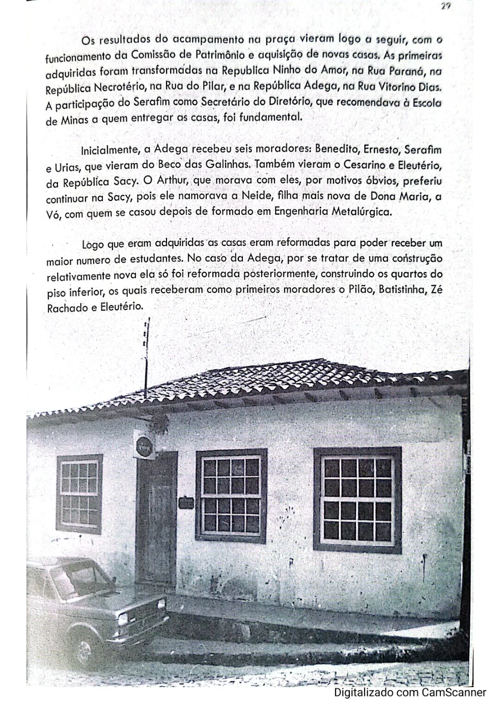

Benedito França Barreto
Bené · citado no relato da fundação.
O tempo passa, mas as histórias de quem morou na Adega continuam fazendo parte da República.
Este espaço reunirá ex-moradores, turmas, fotografias e relatos, organizados de maneira cronológica. O acervo completo será ampliado à medida que os registros forem confirmados.
O relato histórico de 1963 recorda especialmente os quatro companheiros que ocuparam a primeira casa no Beco das Galinhas.
Bené · citado no relato da fundação.
Carlos Bueno · integrante do grupo fundador.
Cacique · integrante do grupo fundador.
Remela · participante da fundação e da mudança para a Vitorino Dias.
O estatuto histórico também registra Urias Francisco de Lima como fundador. A seção será ampliada com as gerações posteriores, mediante confirmação documental.

O espaço está preparado para nomes, apelidos, cursos, períodos de residência, fotografias e histórias enviadas pelos próprios ex-moradores.